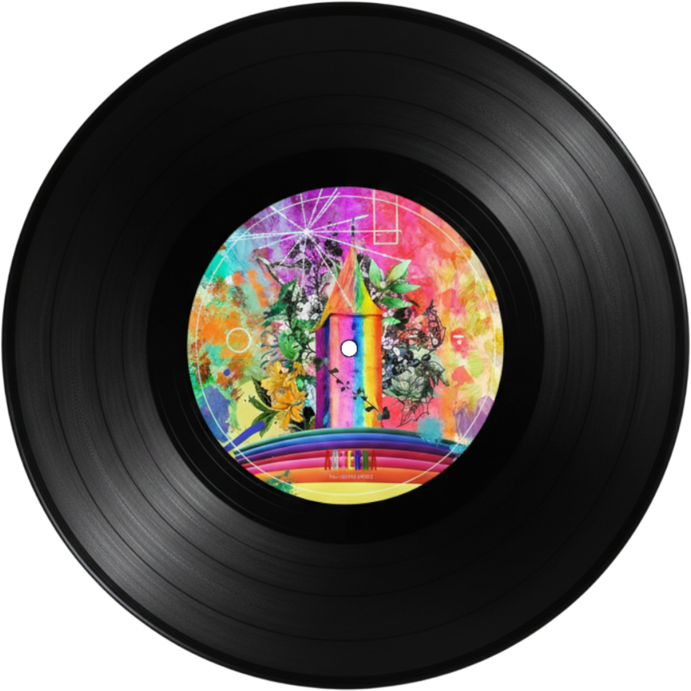
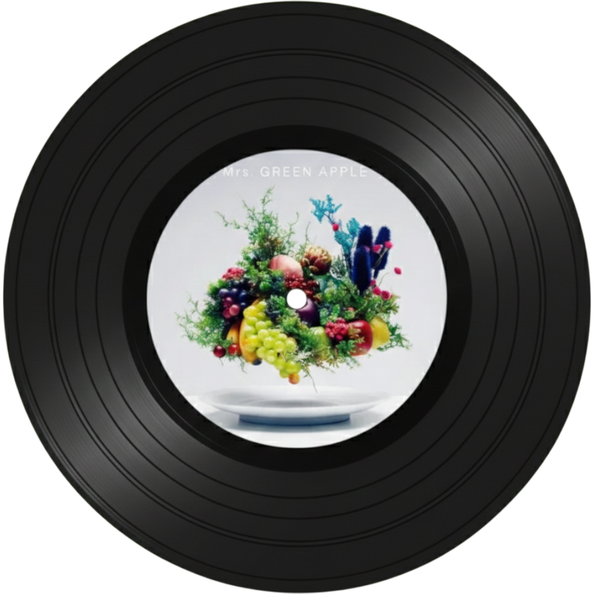

Mrs. GREEN APPLE(미세스 그린 애플)

결성일: 2013년 5월 20일
레이블: EMI Records
멤버:
- 후지사와 료카(키보드): 1993년생, 화려한 퍼포먼스와 맏형 역할
- 오모리 모토키(보컬, 기타): 1996년생, 작사/작곡/편곡 올라운더 천재
- 와카이 히로토(기타): 1996년생, 밴드의 리더이자 분위기 메이커

soranji
영화 <수용소로부터 사랑을 담아>의 주제가인데, 보컬 오모리 모토키의 가창력이 폭발하는 곡이다. 숨소리 하나까지 감정이 실려 있어서 듣다 보면 소름이 돋는다.
웅장하고 거룩한 느낌까지 드는 대곡이다.

WanteD! WanteD!
미세스를 대중들에게 확실히 각인시킨 히트곡이다. 드라마 OST로도 쓰였는데, 도망치고 싶은 마음을 시원하게 뚫어주는 느낌? 이다. 후렴구가 중독성이 미쳐서 한번 들으면 하루
종일 흥얼거리게 될것이다.

Tenbyou-no Uta
일본 노래방 랭킹에서 몇 년째 상위권에 있는 전설적인 듀엣곡이다. 여름날의 짝사랑을 정말 아름답고 슬프게 그려냈다. 미세스 노래 중에 가장 서정적인 곡이라 발라드 취향이라면
인생 곡이 될 것이다.

StaRt
미세스 그린 애플의 메이저 데뷔를 알린 기념비적인 곡이다! 탄산음료 캔을 '탁!' 땠을 때 쏟아지는 거품처럼 청량하고 에너지가 넘쳐. 박수 소리에 맞춰 정신없이 달리다 보면
어느새 기분이 업되어 있을 것이다.